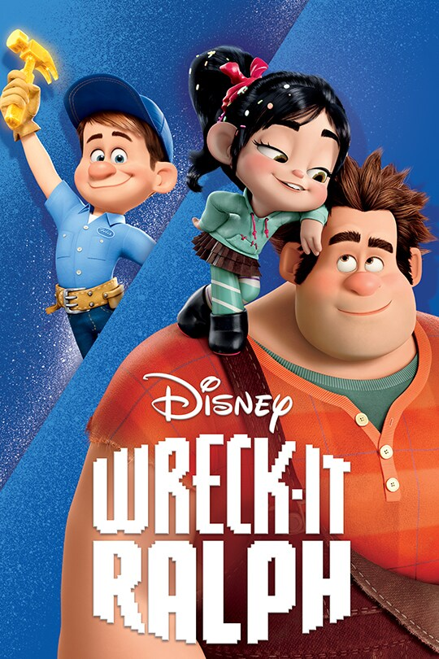
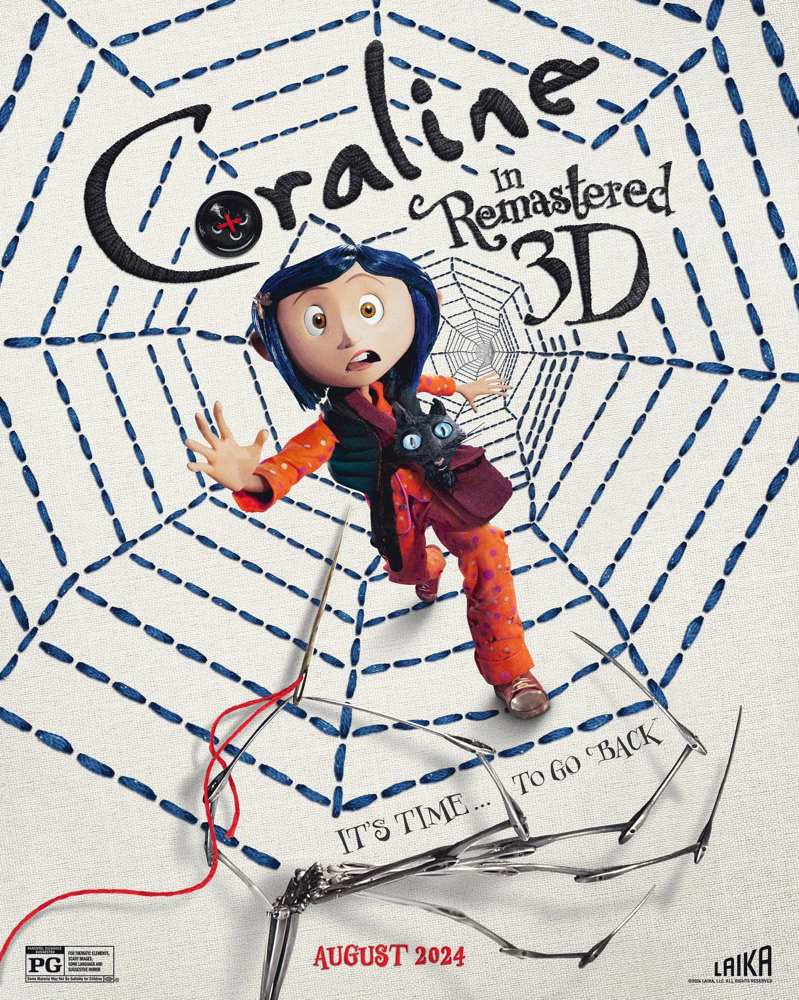
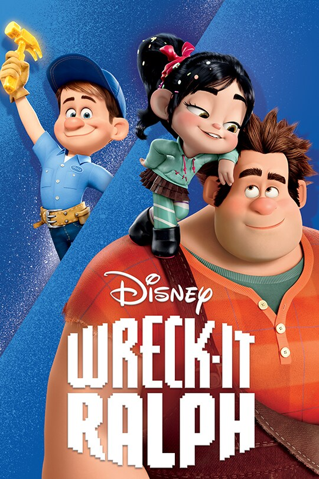
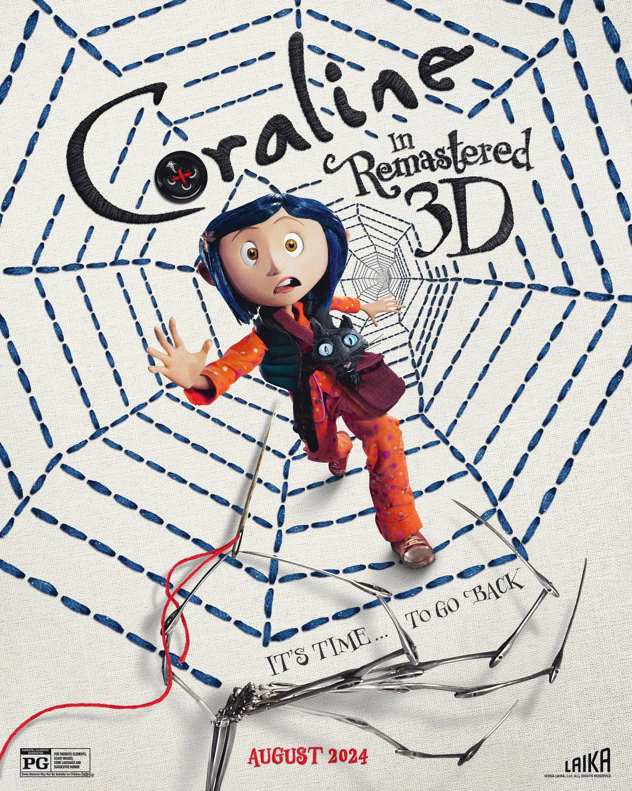

GENRE Fantasy RUNTIME 1h 40min RATING
SYNOPSISWhile exploring her new home, a girl named Coraline (Dakota Fanning) discovers a secret door, behind which lies an alternate world that closely mirrors her own but, in many ways, is better. She rejoices in her discovery, until Other Mother (Teri Hatcher) and the rest of her parallel family try to keep her there forever. Coraline must use all her resources and bravery to make it back to her own family and life.